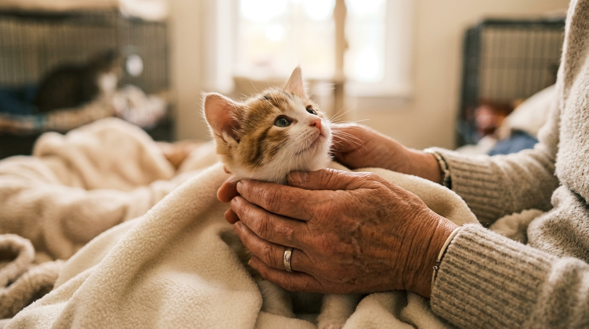
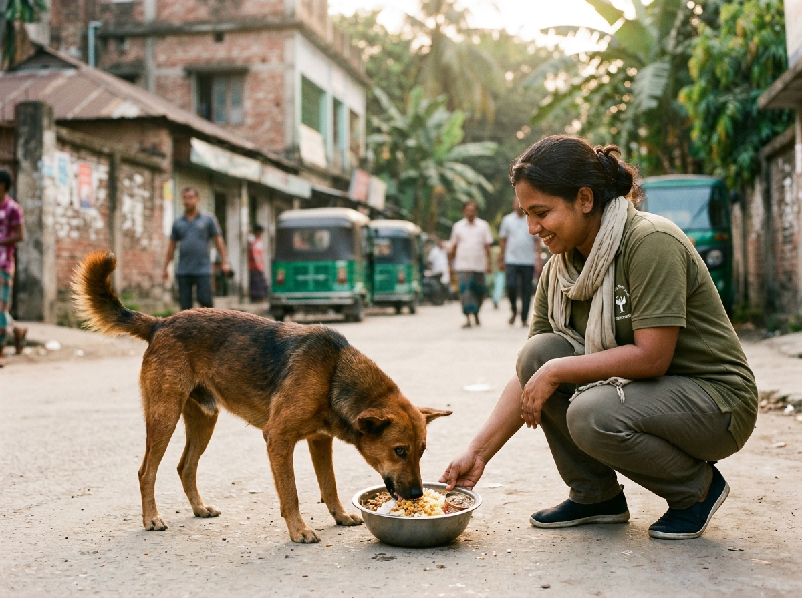
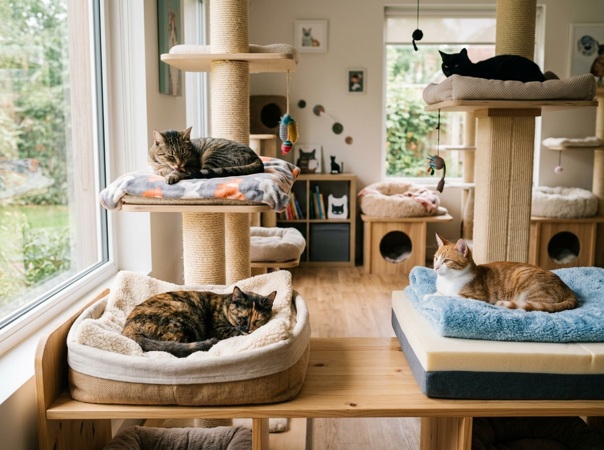

Every Cat Deserves a Second Chance.
We rescue, treat, shelter and care for cats in need — while feeding vulnerable street cats and dogs in our community.

Our Work
Dedicated to protecting vulnerable animals and helping them heal.
Rescue & Treatment
We rescue sick, injured and abandoned cats and provide the care they need.
Shelter & Care
We provide rescued cats with a safe shelter, food and daily care.
Street Feeding
We regularly provide food to vulnerable street cats and dogs.
Foster & Adoption
We provide foster care and help rescued cats find loving homes.
Latest Rescue Stories
Every rescue has a story. Every recovery is a second chance.
Street Feeding
A hungry animal should not have to wonder where its next meal will come from.
Follow Our Rescue Journey
Watch real-time rescue videos, daily shelter updates, and street feeding highlights on our official channels.
Rescue Stories
Every rescue has a story. Every recovery is a second chance.
Our Work & Mission
Comprehensive care from street rescue to lifelong placement.
Rescue & Treatment
We respond to emergency calls for sick, injured, or trapped cats across Dhaka. Partnering with veterinary surgeons, we deliver urgent diagnostic and clinical treatment.
Shelter & Care
Our shelter provides a calm, sanitary, warm environment where animals recover in safety with nutritious meals, daily medical administration, and affection.
Street Feeding
Our street feeding teams travel through local neighborhoods daily, serving clean food and water to vulnerable street cats and stray dogs who face starvation.
Foster & Adoption
We screen compassionate foster homes for temporary care and manage thorough adoption matches to transition rescued cats into permanent, loving families.
Adopt & Foster
Whether giving a rescued cat a permanent home or temporary care, you are saving a life.
Adoptable Cats
Meet our healthy, fully recovered rescued cats ready for permanent adoption.
You Don't Have to Adopt Forever to Save a Life.
Foster care provides a safe temporary haven for rescued cats while they recover and await forever families.
Cat Foster Charge
Includes safe indoor lodging, daily nutritious food, clean environment, veterinary oversight & affection.
Rescue
An animal in distress is safely rescued by Kitten Heaven.
Foster Care
A temporary home provides safety, warmth and socialization.
Treatment & Recovery
Vet care and daily nourishment restore full health.
Adoption
The cat transitions smoothly into a permanent home.
What a Foster Home Provides
- A safe, indoor room or quiet space
- Daily food, water, and clean litter maintenance
- Love, affection, and basic socialization
- Monitoring progress during recovery
What Kitten Heaven Provides
- Complete veterinary care & medicines
- Cat food & essential supplies if needed
- 24/7 volunteer support & guidance
- Managing adoption applications and placements
Street Feeding Program
A hungry animal should not have to wonder where its next meal will come from.
Caring for Both Cats & Dogs on Our Streets
Stray animals in urban Bangladesh endure harsh conditions, traffic hazards, and extreme food insecurity. Kitten Heaven's dedicated feeding initiative distributes freshly prepared, wholesome food directly to stray cat colonies and community dogs.
Beyond filling hungry bellies, regular feeding routes allow our team to monitor street animal health, identify emergency injury cases early, and build trust within local neighborhoods.
SUPPORT FEEDING RUNSCommunity Street Cats Feeding
Nutritious cat food and fresh water served daily at street territory stops.

Vulnerable Street Dogs Feeding
Ensuring stray dogs receive regular meals, kindness, and emergency health checks.

Volunteer Feeding Teams
Dedicated local volunteers organizing daily neighborhood routes.
Work With Us or Volunteer
Whether applying for a paid shelter position or offering volunteer hours, your help saves lives.
Give Your Time. Make a Difference.
Not looking for employment but want to support? You can volunteer your time across feeding runs, shelter help, photography, social media, or rescue transport.
Our Shelter
A quiet, warm place where rescued cats find safety, medical recovery, and comfort.
A Safe Place to Heal
Rescued animals often arrive traumatized, injured, or sick. Our shelter provides an unhurried, stress-free space where each cat receives individualized care, warm beds, clean environment, and continuous affection.
Daily Shelter Routines
- Feeding: Scheduled wholesome nutrition twice daily
- Cleaning: Constant hygiene and sanitized litter care
- Medicine: Prescribed antibiotics, wound treatment & routine vaccinations
- Basic Care: Gentle grooming, physical therapy & play time
About Kitten Heaven
Founded out of deep compassion for Bangladesh's vulnerable street and abandoned animals.
Our Story
[REAL KITTEN HEAVEN STORY WILL BE ADDED]
Kitten Heaven was established to bridge the gap in animal welfare across Bangladesh by offering immediate emergency rescue, veterinary stabilization, safe shelter accommodation, and street feeding programs for animals with nowhere else to turn.
Our Mission
To rescue, care for and protect vulnerable animals and give them a better chance at life through compassionate treatment, structured street feeding, foster networks, and responsible permanent adoption.
Photo Gallery
Browse real moments from our rescues, shelter life, and street feeding runs.
YouTube Videos
Watch real rescue documentation and street feeding stories on our YouTube channel.
Official Kitten Heaven YouTube Channel
Subscribe to watch complete rescue episodes, before & after recoveries, and live street feeding coverage.
VISIT YOUTUBE CHANNELContact Kitten Heaven
Have a question, need assistance, or want to reach out to our team?
Direct Contact Info
Quick Action Links
Send Us a Message
Support Kitten Heaven
Every contribution, big or small, helps us continue our rescue and care for vulnerable animals.
How to Donate
- Open your bKash or Nagad mobile app on your phone.
- Select Send Money option.
- Enter the personal number shown above and input your donation amount.
- Keep your transaction ID / reference for your records.
- Contact Kitten Heaven through Facebook Messenger if confirmation is needed.